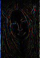

Method Image.Image()->apply_matrix()
- Method apply_matrix
objectarray(array(int|array(int)))matrix)
objectarray(array(int|array(int)))matrix,intr,intg,intb)
objectarray(array(int|array(int)))matrix,intr,intg,intb,int|floatdiv)- Description
-
Applies a pixel-transform matrix, or filter, to the image.
2 2 pixel(x,y)= base+ k ( sum sum pixel(x+k-1,y+l-1)*matrix(k,l) ) k=0 l=01/k is sum of matrix, or sum of matrix multiplied with div. base is given by r,g,b and is normally black.
blur (ie a 2d gauss function): ({({1,2,1}), ({2,5,2}), ({1,2,1})})
original sharpen (k>8, preferably 12 or 16): ({({-1,-1,-1}), ({-1, k,-1}), ({-1,-1,-1})})edge detect: ({({1, 1,1}), ({1,-8,1}), ({1, 1,1})})horisontal edge detect (get the idea): ({({0, 0,0}), ({1,-2,1}), ({0, 0,0})}) emboss (might prefer to begin with a grey image): ({({2, 1, 0}), ({1, 0,-1}), ({0,-1,-2})}), 128,128,128, 3
greyed This function is not very fast.
- Parameter
array -
the matrix; innermost is a value or an array with red, green, blue values for red, green, blue separation.
- Parameter
r - Parameter
g - Parameter
b -
base level of result, default is zero
- Parameter
div -
division factor, default is 1.0.
- Returns
-
the new image object